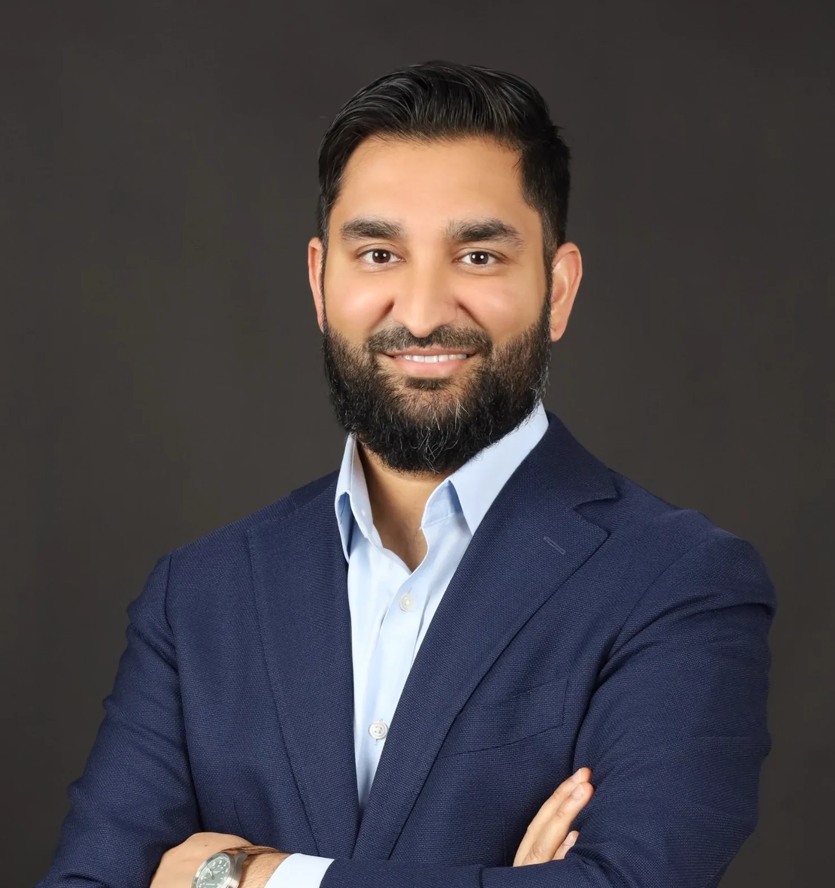

Global executive and operator at the edge of technology and AI, moving capital and companies between the US and the Gulf.
Babar Khan, who publishes academically as Babar Khalid Khan, PhD, is an investor, technology executive and entrepreneur. He operates at the intersection of science, capital, and technology, moving companies and capital between the US and the Gulf. As Head of Life Science Investments at NEOM Investment Fund, he leads a deep-tech portfolio through origination, diligence, and deal structuring, and has structured cross-border joint ventures to localize frontier technology. Babar is also a Co-Founder of AI Astrolabe, which delivers high-quality multimodal data and low-resource language infrastructure for frontier AI systems and agents.

Current Roles
Leads investments and joint ventures across life sciences and related technology platforms, building the industries of the future in Saudi Arabia.
Building high-quality multimodal data and low-resource language infrastructure for frontier AI systems and agents.
What I Do
Sovereign capital across deep tech, biotech, and applied AI. $150M+ in transactions led through the full cycle, from origination to portfolio management, with board and governance roles across the portfolio.
Co-founder of AI Astrolabe, delivering multimodal data and low-resource language infrastructure for frontier AI. I've run the company AI-first across legal, finance, and operations. Built from zero.
A direct bridge between Gulf and global markets, spanning transactions that bring frontier technologies in-country, with established networks across the USA, Europe, and China.
Built my first computer at age 9 (a 286, 4MB RAM), then spent a decade as a technician in our family's IT business. I competed in esports before it was a career path, and have always been tinkering with technology reshaping how people live and work.
STEM PhD (Biology), and completed my Masters while working full-time at Genzyme Genetics as a scientist. Hold multiple US patents, and was the first of 3 scientists to advance a novel antimicrobial to Phase I clinical trials at an NYC biotech that IPO'd.
Founded AI Astrolabe to deliver high-quality multimodal data for frontier AI. I run all business operations (legal, finance, contracting, fundraising) with an AI-first approach. I know what it takes to build from zero to profitability.
Led the life science portfolio at NEOM Investment Fund and structured joint ventures to build "Industries of the Future" in Saudi Arabia. Presented to sovereign investment committees at the highest level and moved capital through complex institutional frameworks.
American citizen, Saudi Premium Resident, UAE Golden Visa holder. Networks spanning US/China venture, GCC sovereign wealth, and global policy circles.
Recognition & Profiles
A short, deliberate list of the sources that carry the record: the recognition itself, the university that awarded the doctorate, and the profiles Babar maintains.
Where I focus, the track record behind it, and how I work with founders and co-investors.